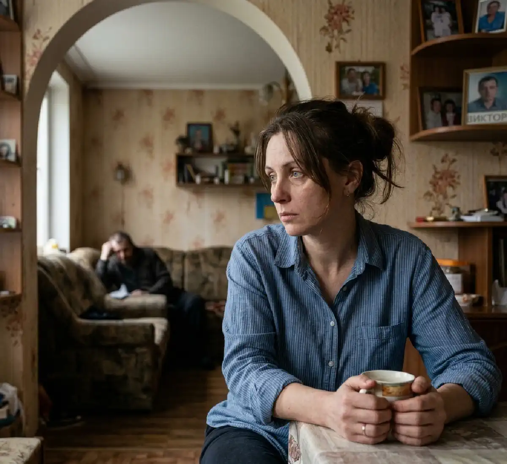

+38(068) 79 72 782
+38(068) 79 72 782Співзалежність у деталях: чому дружина алкоголіка підсвідомо не дає йому кинути пити
Як любов і страх непомітно утримують залежність поруч


Безкоштовна консультація, працюємо цілодобово 24/7
Як любов і страх непомітно утримують залежність поруч

Співзалежність — це складний психологічний стан, при якому життя близької людини поступово починає повністю зосереджуватися навколо залежності іншої. У сім’ях, де присутня алкогольна залежність, дружина часто виявляється втягнутою в цей процес настільки глибоко, що її думки, емоції та поведінка починають безпосередньо залежати від стану та дій партнера. З часом це призводить до того, що власні потреби, бажання та межі відходять на другий план.
Навіть неосвідомлено жінка може вибудовувати поведінку, яка підтримує залежність: згладжувати наслідки вживання, виправдовувати вчинки, брати на себе відповідальність за те, що відбувається. При цьому вона щиро прагне допомогти, врятувати та зберегти сім’ю, не помічаючи, як поступово стає частиною замкнутого кола залежності. Важливо розуміти: мова не про «провину» чи навмисну шкоду, а про глибинні механізми психіки, які формуються з часом під впливом стресу, страху та емоційної залученості. Ці механізми потребують усвідомлення, роботи над собою і, в більшості випадків, професійної допомоги, щоб змінити модель поведінки та вийти зі співзалежних відносин.
Співзалежність — це форма поведінки, при якій людина поступово втрачає межі власної особистості та починає жити проблемами залежного. Її емоційний стан, рішення та дії все більше залежать від поведінки партнера: настрій змінюється залежно від того, чи п’є він, які у нього реакції, в якому він стані. Поступово власні інтереси, цілі та потреби відходять на другий план. Людина починає фокусуватися на контролі ситуації, спробах допомогти, запобігти вживанню або мінімізувати наслідки. Це створює відчуття постійної напруги та внутрішньої відповідальності за життя іншого.
Формується цей стан не відразу. Зазвичай він розвивається на тлі тривалого стресу, тривоги та регулярних спроб «врятувати» близьку людину. Спочатку допомога здається логічною та необхідною, проте з часом вона переростає у стійку модель поведінки. Контроль, турбота, переживання та спроби керувати ситуацією стають частиною повсякденного життя, закріплюються на рівні звички та починають сприйматися як норма.
Алкогольна залежність — це не лише особиста проблема людини, а й серйозне випробування для всієї родини. Близькі неминуче опиняються втягнутими у події: вони переживають, намагаються допомогти, контролювати ситуацію або знайти способи вплинути на поведінку залежного. Поступово життя сім’ї починає підлаштовуватися під проблему, а сама залежність стає її центральною частиною.
Дружина нерідко бере на себе надмірну відповідальність за поведінку чоловіка. Вона може згладжувати наслідки його вживання, вирішувати проблеми, що виникають, виправдовувати його перед оточуючими або приховувати ситуацію, щоб зберегти зовнішній «благополучний» образ сім’ї. На перший погляд такі дії виглядають як турбота та підтримка, проте фактично вони зменшують тиск наслідків на залежного. Це створює ілюзію, що ситуацію можна контролювати, і відкладає момент, коли людина усвідомлює серйозність проблеми. В результаті залежність закріплюється, а її розвиток триває, оскільки відсутня необхідна мотивація до змін.
Багато дій співзалежної людини відбуваються на рівні підсвідомості та сприймаються нею як природні та правильні. Бажання контролювати, рятувати, допомагати та жертвувати собою часто сприймається як прояв любові, турботи та відповідальності за близького. Людина щиро вірить, що своїми зусиллями вона здатна змінити ситуацію та утримати партнера від руйнівної поведінки.
Однак такі механізми нерідко призводять до зворотного ефекту. Постійно «закриваючи» наслідки вживання — вирішуючи проблеми, виправдовуючи поведінку, згладжуючи конфлікти — співзалежний фактично знижує рівень відповідальності залежного за його дії. В результаті людина не стикається з реальними наслідками своєї поведінки та не відчуває необхідності щось змінювати. З часом це формує стійку модель, при якій залежний продовжує вживання, а співзалежний продовжує «рятувати», посилюючи замкнуте коло. При цьому обидва учасники виявляються втягнутими в деструктивну систему, де зміни стають дедалі складнішими без усвідомлення проблеми та професійної допомоги.
Однією з ключових причин формування співзалежності є глибинні страхи, які сильно впливають на поведінку та рішення людини. Ці страхи часто не усвідомлюються повною мірою, але саме вони утримують людину у відносинах, навіть якщо вони завдають болю та руйнують особистість. До таких страхів належать страх втратити партнера, страх самотності, страх осуду з боку суспільства та страх змін. Думка про те, що життя може змінитися, викликає тривогу, тому людина воліє залишатися у звичній, нехай і важкій ситуації. Навіть негативна стабільність сприймається як безпечніша, ніж невідомість.
Додатково значну роль відіграють внутрішні установки та переконання, які формуються під впливом виховання, життєвого досвіду та соціального оточення. Фрази на кшталт «я мушу допомогти», «без мене він не впорається», «це моя відповідальність» стають внутрішніми правилами, які спрямовують поведінку. Людина починає відчувати себе зобов’язаною рятувати, контролювати та жертвувати собою заради іншої. Ці установки закріплюють співзалежну поведінку і заважають побачити ситуацію об’єктивно. В результаті людина продовжує залишатися в руйнівних відносинах, виправдовуючи те, що відбувається, і відкладаючи зміни, навіть якщо вони необхідні для її власного благополуччя.
З часом залежність справді стає центральною частиною життя сім’ї. Поступово всі розмови, рішення та емоції починають обертатися навколо проблеми: як допомогти, як запобігти зриву, як упоратися з наслідками. Звичайні аспекти життя — особисті інтереси, плани, відпочинок, розвиток — відходять на другий план, поступаючись місцем постійній напрузі та контролю ситуації. Дружина може настільки звикнути до ролі «рятівника», що втрачає зв’язок зі своїми власними потребами, бажаннями та почуттями. Її життя починає будуватися навколо стану партнера, а власні межі розмиваються. Внутрішньо формується переконання, що її головне завдання — утримати ситуацію під контролем і не допустити погіршення.
В результаті виникає емоційна прив’язаність не лише до самої людини, а й до самої проблеми. Стан постійної залученості стає звичним, а вихід із цієї ролі викликає тривогу та страх. Саме тому навіть при розумінні ситуації змінити модель поведінки буває вкрай складно — залежність перетворюється на частину життєвого сценарію, з якого складно вийти без усвідомлення та підтримки.
Співзалежність часто проявляється через характерні поведінкові та емоційні реакції, які на перший погляд можуть здаватися турботою, але насправді підтримують проблему та посилюють її.
До найтиповіших проявів належать надмірний контроль, постійна жалість до залежного та почуття провини за його стан. Людина прагне відстежувати поведінку партнера, обмежувати його дії, перевіряти та запобігати можливим зривам, що створює постійну напругу у відносинах. Жалість, у свою чергу, призводить до того, що залежного починають виправдовувати, знижуючи рівень його відповідальності за те, що відбувається.
Почуття провини відіграє одну з ключових ролей: співзалежна людина може щиро вважати, що саме вона недостатньо допомогла, недогледіла або зробила щось не так. Це змушує її продовжувати «рятувати» партнера, навіть якщо такі спроби не дають результату. У результаті формується замкнуте коло: контроль посилює опір, жалість знімає відповідальність, а почуття провини закріплює співзалежну поведінку. Без усвідомлення цих механізмів та зміни моделі взаємодії вийти з цієї ситуації стає вкрай складно.
Виправдання — один із найпоширеніших і стійких механізмів співзалежної поведінки, який формується поступово і часто не усвідомлюється самою людиною. Дружина може пояснювати вживання алкоголю стресом, проблемами на роботі, втомою, труднощами в житті або навіть «важким характером обставин», намагаючись знайти логічне пояснення подіям і тим самим знизити внутрішню напругу та тривогу.
Така позиція допомагає тимчасово зберегти емоційну стабільність, уникнути гострих конфліктів та підтримувати видимість нормальних стосунків. Виникає відчуття, що ситуацію можна контролювати і що поведінка залежного має «об’єктивні причини», а отже — не є повністю його відповідальністю. Це створює ілюзію керованості того, що відбувається, і дає надію, що все зміниться саме собою, коли «минуть труднощі».
Однак у цього механізму є зворотний бік. Постійно виправдовуючи поведінку залежного, людина фактично знімає з нього відповідальність за його вчинки. Більше того, вона може починати захищати його перед оточуючими, приховувати проблему, згладжувати наслідки та брати на себе вирішення труднощів, що виникають. В результаті залежний не стикається з реальними наслідками своєї поведінки і не відчуває потреби щось змінювати.
З часом така модель стає стійкою. Виправдання перетворюється на автоматичну реакцію, а сама проблема — на звичну частину життя. Це не тільки посилює залежність, а й закріплює співзалежну поведінку, роблячи відносини дедалі дисфункціональнішими. В результаті страждають обоє: залежний продовжує руйнівну поведінку, а його близька людина поступово втрачає власні межі, емоційні ресурси та відчуття контролю над своїм життям. Чим довше зберігається така модель, тим складніше стає розірвати це коло без усвідомлення проблеми та професійної допомоги.
Співзалежність порушує природну та здорову структуру сім’ї, поступово змінюючи ролі та взаємодію між її членами. У таких стосунках одна людина стає «проблемною» — залежною, а інша бере на себе роль «рятівника», намагаючись контролювати ситуацію, допомагати та не допускати погіршення. З часом це призводить до низки негативних наслідків:
Сім’я перестає функціонувати як підтримуюча система і перетворюється на простір, де домінують стрес та нестабільність. Взаєморозуміння знижується, а спілкування все частіше будується навколо проблеми залежності. Особливо вразливі у такій ситуації діти. Вони спостерігають за тим, що відбувається, і можуть переймати нездорові моделі поведінки, вважаючи їх нормою. У майбутньому це може позначитися на їхніх власних стосунках, самооцінці та здатності вибудовувати здорові межі.
Вихід із співзалежності — це поступовий, глибокий та усвідомлений процес, який потребує часу, внутрішньої чесності та готовності до змін. Це не швидкий крок, а шлях, на якому людина заново вчиться жити, відчувати та вибудовувати стосунки. Перший і найважливіший етап — визнання проблеми та розуміння того, що поточна модель поведінки не тільки не допомагає близькій людині, а й підтримує залежність, руйнує особисті межі та поступово виснажує емоційні ресурси. Співзалежність формується непомітно: через бажання допомогти, врятувати, захистити. З часом ці наміри перетворюються на постійний контроль, тривогу та життя «заради іншого». Тому усвідомлення того, що така модель взаємодії потребує змін, стає відправною точкою до відновлення власної особистості та внутрішнього балансу. На цьому етапі особливо важливо:
Додатково важливо розвивати емоційну стійкість: вчитися проживати почуття без придушення, справлятися з тривогою, почуттям провини та страхом. Часто саме ці емоції утримують людину у співзалежних стосунках. Поступова робота над собою допомагає замінити їх на впевненість, спокій та повагу до власних меж. Вихід із співзалежності не означає «кинути» людину чи відмовитися від неї. Це не про байдужість, а про здорову дистанцію та усвідомлену участь. Йдеться про зміну моделі взаємодії: від контролю, жертовності та постійного порятунку — до поваги, підтримки без тиску та визнання відповідальності кожного за своє життя.
Допомога фахівця необхідна, якщо:
Психіатр-нарколог допомагає не лише залежному, а й його близьким, пояснюючи механізми хвороби та формуючи правильне розуміння подій. Фахівець розробляє індивідуальну стратегію лікування, яка може включати детоксикацію, медикаментозну підтримку, психотерапію та подальшу реабілітацію. Важливо, що робота ведеться комплексно: лікар допомагає стабілізувати стан пацієнта, знизити тягу до речовин та відновити роботу організму, а також навчає родичів правильній поведінці — без тиску, контролю та руйнівної жертовності. Звернутися за професійною допомогою можна в різних містах України. Наркологічна допомога доступна в таких містах: (Київ, Харків, Одеса, Дніпро, Львів, Запоріжжя, Черкаси) . У кожному з них фахівці надають як екстрену допомогу вдома, так і комплексне лікування в умовах стаціонару. Своєчасне звернення до лікаря — це можливість не лише зупинити розвиток залежності, а й відновити якість життя, повернути контроль над ситуацією та вибудувати здорові стосунки всередині сім’ї.
Після виходу зі співзалежності особливо важливо не просто «звільнитися» від колишньої моделі поведінки, а поступово відновити власну особистість, повернути собі відчуття цілісності, цінності та внутрішньої опори. Цей етап потребує часу, терпіння та уважного ставлення до себе, оскільки тривале перебування у співзалежних стосунках часто призводить до втрати своїх бажань, придушення емоцій та життя «через іншу людину». Відновлення особистості — це процес повернення до себе справжнього: своїх почуттів, потреб, інтересів та життєвих орієнтирів. На цьому етапі людина вчиться заново вибудовувати контакт із собою та навколишнім світом без постійного почуття тривоги та контролю. Це включає:
Додатково важливо розвивати навички самопідтримки: вміння справлятися зі стресом, піклуватися про свій фізичний та психічний стан, дозволяти собі відпочинок та відновлюватися. Поступово життя перестає обертатися навколо проблеми залежності іншої людини і починає наповнюватися власним змістом, цілями та ресурсами. В результаті людина не просто виходить із співзалежності, а формує нову, здоровішу модель життя — з опорою на себе, повагою до своїх потреб та здатністю будувати гармонійні стосунки з оточуючими. Людина поступово вчиться жити без постійного контролю та тривоги, повертаючи собі внутрішню рівновагу.
Співзалежність — це не слабкість і не «риса характеру», а складний психологічний стан, який формується у тривалих стресових та емоційно важких обставинах. Найчастіше він розвивається у людей, чиї близькі стикаються із залежністю, і стає своєрідною спробою адаптуватися до нестабільної та болючої реальності. Поступово людина звикає жити в режимі постійного контролю, тривоги та відповідальності за іншого, втрачаючи при цьому контакт із собою. Важливо розуміти, що співзалежність — це не свідомий вибір, а сформована модель поведінки, яка закріплюється з часом. Вона може супроводжуватися почуттям провини, страхом, внутрішньою напругою та переконанням, що «я мушу впоратися» або «без мене все зруйнується». Однак така позиція лише посилює проблему і заважає як самій людині, так і залежному почати шлях до змін.
Усвідомлення проблеми — це перший і один із найскладніших кроків. Визнання того, що ситуація потребує перегляду, відкриває можливість для внутрішньої трансформації. Це момент, коли людина починає ставити собі важливі питання: «Що відбувається зі мною?», «Чому я живу чужим життям?», «Чого хочу саме я?». Звернення за допомогою — наступний ключовий етап. Підтримка фахівців допомагає розібратися в причинах співзалежності, побачити свої поведінкові патерни та поступово замінити їх на здоровіші. Робота з психологом чи психотерапевтом дозволяє безпечно прожити накопичені емоції, знизити тривожність та відновити внутрішню стійкість.
Тільки змінивши модель поведінки, можна справді вплинути на ситуацію. Коли людина перестає контролювати, рятувати та жертвувати собою, вона створює нові умови взаємодії. У цих умовах залежна людина стикається з наслідками своїх дій та отримує шанс усвідомлено прийняти рішення про лікування.
Важливо підкреслити: зміни в собі — це не відмова від близької людини, а перехід до зрілої та здорової форми підтримки. Це про повагу, межі та відповідальність кожного за своє життя. У результаті робота зі співзалежністю допомагає не лише відновити власне психологічний стан, а й стає важливим фактором, який може сприяти реальному одужанню близької людини.

Так, ми суворо дотримуємося повної конфіденційності на всіх етапах лікування. Інформація про пацієнта, діагноз та проходження терапії не передається третім особам. Звернення до нас не тягне за собою постановку на облік. Ви можете бути впевнені у безпеці та анонімності.
Програма лікування розробляється індивідуально після консультації з фахівцем. Враховуються вид залежності, її тривалість, фізичний та психологічний стан пацієнта. Такий підхід дозволяє підвищити ефективність терапії та знизити ризик зриву. Ми не використовуємо шаблонні рішення.
Так, ми супроводжуємо пацієнтів і після основного курсу лікування. Проводяться консультації, рекомендації щодо адаптації та профілактики рецидивів. За потреби можлива подальша психологічна підтримка. Це допомагає зберегти результат та повернутися до повноцінного життя.
Номер телефону:
+380 (68) 797 27 82
+380 (50) 021 69 57
Адресу наркологічного центра вашого міста уточнюйте за
телефоном
Працюємо: Київ, Одеса, Львів, Харків, Дніпро, Запоріжжя,
Черкасах, Чугуєві, Чорноморську, Кам'янському
Telegram: t.me/umbrellaplus
Графік работы: Цілодобово